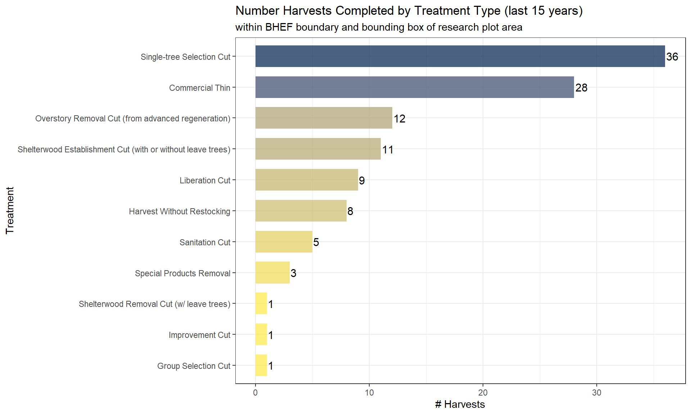

Chapter 3 Import Vector Data
# turn off the s2 processing
## https://stackoverflow.com/questions/68478179/how-to-resolve-spherical-geometry-failures-when-joining-spatial-data
sf::sf_use_s2(FALSE)3.1 National Forest Management data download
The Forest Activity Tracking System (FACTS) database maintained by the U.S. Department of Agriculture, Forest Service (USFS) used to delineate georeferenced boundaries of forest harvest activities.
# check for data and download
zip_path <- c(
"https://data.fs.usda.gov/geodata/edw/edw_resources/fc/S_USA.NFSLandUnit.gdb.zip" # forests boundaries
, "https://data.fs.usda.gov/geodata/edw/edw_resources/fc/S_USA.Experimental_Area_Boundaries.gdb.zip" # exp forest boundaries
# , "https://data.fs.usda.gov/geodata/edw/edw_resources/fc/S_USA.Activity_TimberHarvest.gdb.zip" # Timber Harvests
# , "https://data.fs.usda.gov/geodata/edw/edw_resources/shp/S_USA.Activity_HazFuelTrt_PL.zip" # Hazardous Fuel Treatment Reduction
# , "https://data.fs.usda.gov/geodata/edw/edw_resources/shp/S_USA.Activity_SilvTSI.zip" # SilvTSI (Silviculture Timber Stand Improvement)
# , "https://data.fs.usda.gov/geodata/edw/edw_resources/shp/S_USA.Activity_SilvReforestation.zip" # SilvReforestation
# , "https://edcintl.cr.usgs.gov/downloads/sciweb1/shared/MTBS_Fire/data/composite_data/burned_area_extent_shapefile/mtbs_perimeter_data.zip"
)
for (i in 1:length(zip_path)) {
f_nm <- paste0( "../data/"
, str_split(zip_path[i], "/", simplify = TRUE)[length(str_split(zip_path[i], "/", simplify = TRUE))]
)
fldr <- paste0(gsub(".zip", "", f_nm))
options(timeout = 60 * 15)
if(file.exists(fldr) == FALSE){
# download data
if(file.exists(f_nm) == FALSE){
download.file(zip_path[i], destfile = f_nm)
}else{print("file already exists")}
# unzip
unzip(f_nm, overwrite=TRUE, exdir = fldr)
file.remove(f_nm)
}else{print("unzip already exists")}
}3.2 Load Research Plot data
Ritter et al. 2022 established eleven, 100x100 m (1-ha), plots within mechanical treatment units. Measurements occurred during the summer of 2017, which represented 3 years post-treatment for small group retention treatment and 4 years post-treatment for free selection-off, free selection-On, and commercial thinning treatments. In the free selection-off treatments, overstory trees were included in the spacing guidelines for precommercial thinning treatment. In the free selection-on treatments, overstory trees were not included in the spacing guidelines for precommercial thinning treatments resulting in residual precommercial trees potentially growing under the crown of an overstory tree.
# load shapefile
research_plots <- sf::st_read("../data/Black_Hills_StemMaps.shp") %>%
dplyr::filter(sf::st_is_valid(.)) %>%
rename_with(~ tolower(
gsub(" ", "_",
str_trim(gsub("\\s+", " ", .x))
)
)) %>%
sf::st_buffer(dist = 50, endCapStyle = "SQUARE") %>%
dplyr::mutate(area = sf::st_area(.))
#rename sf geom column
names(research_plots)[names(research_plots)==tolower(attr(research_plots, "sf_column"))] = "geometry"
sf::st_geometry(research_plots) = "geometry"
# data structure of data
research_plots %>% glimpse()
# plot does not uniquely identify record
length(unique(research_plots$plot)) == nrow(research_plots)
# create id
research_plots <- research_plots %>%
dplyr::group_by(plot) %>%
dplyr::mutate(
plot_id = paste0(plot, "_", as.character(dplyr::row_number()))
) %>%
dplyr::ungroup() %>%
dplyr::relocate(plot_id)
length(unique(research_plots$plot_id)) == nrow(research_plots)3.3 Load Stem Map data
Ritter et al. 2022 installed three plots in the commercial thin treatment and each of the two free selection treatments. Only two plots were installed in the small group retention treatment as it was smaller in area and was bisected by a powerline corridor that precluded the placement of more than two nonoverlapping plots. Each plot was subdivided into 16 25x25 m quadrats within which all live trees >1.37 m tall had their x, y locations recorded. In addition to mapping their x, y location, all live trees were tagged and had their DBH, tree height (TH), compacted crown base height (CBH), crown width (CW), and species recorded.
# load stem map shapefile
stem_map <- sf::st_read("../data/BHEF_stem_map.shp") %>%
dplyr::filter(sf::st_is_valid(.)) %>%
rename_with(~ tolower(
gsub(" ", "_",
str_trim(gsub("\\s+", " ", .x))
)
)) %>%
sf::st_transform(crs = sf::st_crs(research_plots))
#rename sf geom column
names(stem_map)[names(stem_map)==tolower(attr(stem_map, "sf_column"))] = "geometry"
sf::st_geometry(stem_map) = "geometry"
# data structure of stem map data
stem_map %>% glimpse()3.4 Load National Forests shapefile
# load forest boundary shapefile
# extract file name
f_path <- paste0("../data", "/", "S_USA.NFSLandUnit.gdb", "/")
dta_nm <- paste(f_path
, list.files(f_path, pattern = "\\.gdb$")[1]
, sep = "/"
)
lyr_nms <- sf::st_layers(dsn = dta_nm)$name
lyr <- lyr_nms[grep("NFSLandUnit", lyr_nms)][1]
# load in data
forests <- sf::st_read(
dsn = dta_nm
, layer = lyr
, query = "SELECT * FROM \"NFSLandUnit\"
WHERE
REGION NOT IN ('08', '09', '10')
AND NFSLANDUNITTYPE = 'National Forest'
"
) %>%
rename_with(~ tolower(
gsub(" ", "_",
str_trim(gsub("\\s+", " ", .x))
)
))
#rename sf geom column
names(forests)[names(forests)==tolower(attr(forests, "sf_column"))] = "geometry"
sf::st_geometry(forests) = "geometry"
# transform
forests <- forests %>%
sf::st_transform(crs = sf::st_crs(research_plots))
#make BHNF only dataset
forests_bhnf <- forests %>% filter(region == "02" & nffid == "0471")3.5 Load Experimental Forests shapefile
# load boundary shapefile
# extract file name
f_path <- paste0("../data", "/", "S_USA.Experimental_Area_Boundaries.gdb", "/")
dta_nm <- paste(f_path
, list.files(f_path, pattern = "\\.gdb$")[1]
, sep = "/"
)
lyr_nms <- sf::st_layers(dsn = dta_nm)$name
lyr <- lyr_nms[grep("Experimental_Area_Boundaries", lyr_nms)][1]
# load in data
exp_forests <- sf::st_read(
dsn = dta_nm
, layer = lyr
) %>%
rename_with(~ tolower(
gsub(" ", "_",
str_trim(gsub("\\s+", " ", .x))
)
))
#rename sf geom column
names(exp_forests)[names(exp_forests)==tolower(attr(exp_forests, "sf_column"))] = "geometry"
sf::st_geometry(exp_forests) = "geometry"
# transform
exp_forests <- exp_forests %>%
sf::st_transform(crs = sf::st_crs(research_plots))
# spatial join BHNF
bhef_boundary <- sf::st_intersection(forests_bhnf %>% dplyr::select(nfslandunitid, nffid, nfslandunitname), exp_forests)3.6 Load FACTS Timber Harvests
Metadata file available here.
Utilize data downloaded and created in Forest Management Impacts on Productivity project.
This appendix includes a listing of all the active and inactive FACTS activity codes, as well as detailed descriptions of some of the codes.
# load boundary shapefile
harvests <- sf::st_read("../data/harvests.gpkg") %>%
rename_with(~ tolower(
gsub(" ", "_",
str_trim(gsub("\\s+", " ", .x))
)
))
#rename sf geom column
names(harvests)[names(harvests)==tolower(attr(harvests, "sf_column"))] = "geometry"
sf::st_geometry(harvests) = "geometry"
# transform
harvests <- harvests %>%
sf::st_transform(crs = sf::st_crs(research_plots))
# spatial join BHEF
# bhef_harvests <- sf::st_intersection(
# bhef_boundary %>%
# dplyr::select(name, station, hectares, lead_scientist) %>%
# dplyr::rename_with(~ paste0("exp_forest_", .), -geometry) %>%
# # there are some plots outside of BHEF boundary
# sf::st_buffer(2500)
# , harvests)
bhef_harvests <- sf::st_intersection(
# there are some plots outside of BHEF boundary
sf::st_union(
bhef_boundary
, sf::st_as_sfc(sf::st_bbox(research_plots)) %>%
sf::st_transform(crs = sf::st_crs(research_plots))
) %>% dplyr::select(geometry)
, harvests)
# filter for last 15 years
bhef_harvests_l15 <- bhef_harvests %>% dplyr::filter(year_id >= year(Sys.time()) - 15 ) %>%
dplyr::mutate(lab <- paste0(treatment_type_grp, " (", as.character(year_id), ")"))3.6.1 Harvests by treatment type
# data by treatment type
bhef_harvests_l15 %>% sf::st_set_geometry(NULL) %>%
dplyr::group_by(activity_name) %>%
dplyr::summarise(n = n()) %>%
dplyr::arrange(desc(n)) %>%
ggplot(.) +
geom_col(aes(y = reorder(activity_name, n), x = n, fill = n), width = 0.7) +
geom_text(
aes(y = reorder(activity_name, n), x =n, label = scales::comma(n, accuracy = 1))
, color = "black", size = 4
, position = position_dodge(0.9)
, hjust = -0.1
) +
labs(
title = "Number Harvests Completed by Treatment Type (last 15 years)"
, subtitle = "within BHEF boundary and bounding box of research plot area"
) +
xlab("# Harvests") +
ylab("Treatment") +
scale_x_continuous(labels = scales::comma) +
scale_fill_viridis_c(alpha = 0.7, option = "cividis", direction = -1) +
theme_bw() +
theme(
legend.position = "none"
)
3.7 Join Research Plot to Harvest
# attach harvest data to research plots
research_plots_harvests <- sf::st_intersection(
research_plots
, bhef_harvests_l15 %>%
dplyr::select(
activity_code
, activity_name
, treatment_type_grp
, suid
, date_compl
, year_id
) %>%
# dplyr::filter(treatment_type_grp %in% c("Commercial Thinning"
# , "Overstory Removal Cut"
# , "Single-tree/Group Selection Cut"
# , "Patch Clearcut"
# )) %>%
dplyr::rename_with(~ paste0("harvest_", .), -geometry)
) %>%
dplyr::mutate(harvest_plot_areamsq = as.numeric(sf::st_area(.))) %>%
sf::st_set_geometry(NULL) %>%
dplyr::group_by(plot_id) %>%
dplyr::arrange(
plot_id
, desc(harvest_plot_areamsq)
, harvest_date_compl
) %>%
dplyr::select(
plot_id
, dplyr::starts_with("harvest_")
) %>%
dplyr::mutate(
row_n = dplyr::row_number()
) %>%
dplyr::ungroup() %>%
tidyr::pivot_wider(
id_cols = plot_id
, names_from = row_n
, values_from = !c(plot_id, row_n)
, names_sep = "_"
)
# join to spatial data
research_plots <- research_plots %>%
left_join(research_plots_harvests, by = c("plot_id"="plot_id"))
remove(research_plots_harvests)3.8 Join Stem Map to Research Plot & Harvest
# attach harvest data to stem map
stem_map_harvests <- sf::st_intersection(
stem_map
, bhef_harvests_l15 %>%
dplyr::select(
activity_code
, activity_name
, treatment_type_grp
, suid
, date_compl
, year_id
) %>%
dplyr::rename_with(~ paste0("harvest_", .), -geometry)
) %>%
sf::st_set_geometry(NULL) %>%
dplyr::group_by(uidtree) %>%
dplyr::arrange(
uidtree
, harvest_date_compl
) %>%
dplyr::select(
uidtree
, dplyr::starts_with("harvest_")
) %>%
dplyr::mutate(
row_n = dplyr::row_number()
) %>%
dplyr::ungroup() %>%
tidyr::pivot_wider(
id_cols = uidtree
, names_from = row_n
, values_from = !c(uidtree, row_n)
, names_sep = "_"
)
# join to spatial data
stem_map <- stem_map %>%
left_join(stem_map_harvests, by = c("uidtree"="uidtree"))
# join to research plot data
temp_stem_map <- sf::st_intersection(
stem_map %>% dplyr::select(uidtree)
, research_plots %>%
dplyr::select(plot_id, trt, harvest_activity_name_1, harvest_year_id_1, harvest_treatment_type_grp_1) %>%
dplyr::rename_with(~ paste0("rplot_", .), -geometry)
) %>%
sf::st_set_geometry(NULL)
stem_map <- stem_map %>%
left_join(temp_stem_map, by = c("uidtree"="uidtree"))
remove(list = c("stem_map_harvests", "temp_stem_map"))3.8.1 Stem Map Descriptive statistics.
# descriptive stats
kable(stem_map %>% sf::st_set_geometry(NULL) %>%
dplyr::group_by(
unit
, harvest_activity_name_1
) %>%
dplyr::summarise(
# plots = dplyr::n_distinct(plot)
trees = dplyr::n_distinct(uidtree)
, min_DBHin = min(dbhin)
, max_DBHin = max(dbhin)
, mean_DBHin = mean(dbhin)
, QMDin = sqrt( sum(dbhin*dbhin) / n() )
, min_HTft = min(heightft)
, max_HTft = max(heightft)
, mean_HTft = mean(heightft)
, stdev_HTft = sd(heightft)
) %>%
dplyr::arrange(unit, desc(trees))
, format = "html"
, caption = "Tree Measurement Descriptive Statistics by Unit & Treatment"
, digits = 1
, col.names = c(
"unit"
, "treatment"
# , "# plots"
, "# trees"
, "min"
, "max"
, "mean"
, "QMD"
, "min"
, "max"
, "mean"
, "st.dev."
)
, align=rep('c', 5)
) %>%
# kable_classic() %>%
add_header_above(c(" " = 3, "DBH (in.)" = 3, "QMD (in.)" = 1, "Height (ft.)" = 4)) %>%
kable_material(c("striped", "hover")) %>%
# column_spec(., 2, width = "20em") %>%
kable_styling(font_size = 11)3.9 Map Harvests, Research Plots, Stem Map
# make map
# different background map types: https://leaflet-extras.github.io/leaflet-providers/preview/
# names(leaflet.providers::providers_loaded()$providers)
mapviewOptions(homebutton = FALSE, basemaps = c("Esri"))
# map
mapview(bhef_boundary
, color = "black"
, lwd = 3
, alpha.regions = 0
, label = FALSE
, legend = FALSE
, popup = FALSE
) +
mapview(bhef_harvests_l15
, zcol = "treatment_type_grp"
, col.regions = viridis::viridis(n=length(unique(bhef_harvests_l15$treatment_type_grp)))
, alpha.regions = 0.6
, label = c("lab")
, legend = FALSE
, popup = popupTable(
bhef_harvests_l15
, zcol = c(
"year_id"
, "treatment_type_grp"
, "activity_name"
)
, row.numbers = FALSE
, feature.id = FALSE
)
) +
mapview(research_plots
, zcol = "trt"
, col.regions = viridis::mako(n=length(unique(research_plots$trt)), direction = -1)
, lwd = 2
, col = "gray90"
, alpha.regions = 0.8
, label = c("trt")
, legend = FALSE
, popup = popupTable(
research_plots
, zcol = c(
"plot"
, "trt"
, "harvest_activity_name_1"
, "harvest_year_id_1"
)
, row.numbers = FALSE
, feature.id = FALSE
)
) +
mapview(stem_map
, zcol = "unit"
, col.regions = viridis::turbo(n=length(unique(stem_map$unit)), alpha = 0.8)
# RColorBrewer::brewer.pal(n = length(unique(stem_map$unit)), name = "RdYlBu")
, cex = 3.5
, label = c("unit")
, legend = FALSE
, popup = popupTable(
stem_map
, zcol = c(
"unit"
, "plot"
, "species"
, "tag"
, "heightft"
, "dbhin"
, "harvest_activity_name_1"
, "harvest_year_id_1"
)
, row.numbers = FALSE
, feature.id = FALSE
)
)Note, only harvests in last 15 years shown
3.10 Write Out Data
# save cleaned data for reading to R later
sf::st_write(forests_bhnf, "../data/forests_bhnf.gpkg", append = FALSE)
sf::st_write(bhef_boundary, "../data/bhef_boundary.gpkg", append = FALSE)
sf::st_write(bhef_harvests, "../data/bhef_harvests.gpkg", append = FALSE)
sf::st_write(research_plots, "../data/research_plots.gpkg", append = FALSE)
sf::st_write(stem_map, "../data/stem_map.gpkg", append = FALSE)